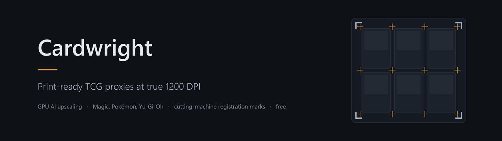

A free Windows app that turns card images into true 1200 DPI print-ready proxies using AI upscaling on your own GPU, then lays them out into print sheets with cut guides and cutting-machine registration marks.
Free. No account, no upload limits, and offline after the first run. Windows 10 or 11.
Web-based proxy builders embed roughly 300 DPI images into a PDF and call it 1200 DPI. The page metadata says 1200; the pixels do not. Cardwright reconstructs real detail with an AI model chosen per card, so what reaches the paper is actually there.
2976x4160 px per card via Vulkan. The model is picked per card: scans, digital renders and photorealistic art each get the one that suits them. No GPU falls back to high-quality resizing.
Scryfall, Gatherer, MPC Autofill, Pokemon and Yu-Gi-Oh. Type a name and a gallery shows every printing, so you see what you are about to print. Moxfield, Archidekt and MPC order files import directly.
Cut guides, bleed, rounded corners, duplex backs with offset and rotation correction, and Silhouette-accurate registration marks. A3, Letter, Legal and Tabloid, with grids up to 4x4.
Nine calibration profiles, shadow lift, and test sheets for colour, shadow and duplex alignment, so you dial it in once instead of guessing every time.
Magic, Pokemon, Yu-Gi-Oh, or a custom size in millimetres. Bring your own art with Add files and it handles that too.
Drag to reorder, duplicate, drop cards, set a custom back, magnify to check detail before committing paper. Undo and redo throughout.
Windows Defender may report Trojan:Win32/Wacatac.C!ml. The
!ml suffix means a machine-learning guess about the file's
shape, not a match against a known virus, and Wacatac is Defender's
catch-all for packed executables.
Cardwright is a packed executable that legitimately does three things
malware also does: it ships as one self-extracting file, it downloads and
runs the AI engine on first launch, and it replaces its own
.exe when you accept an update. All three are visible in the
source.
You do not have to take that on trust. Every release publishes the SHA-256 of both files. Compare yours:
certutil -hashfile Cardwright.exe SHA256If it matches the release page, you have exactly the file that was
published. Only the portable .exe is flagged; the installer is
not. A code-signing certificate is the real fix and is being worked on.
The app updates itself, and the Help button carries an FAQ covering paper choices, cutting machines, borders and printer problems.
Cardwright is free to use and always will be. The source is published so anyone can read and audit what it does, though it is not open source: you may study and build it for yourself, but not redistribute, rebrand or sell it. See the licence.
It is not affiliated with Wizards of the Coast, Nintendo, The Pokemon Company or Konami. Proxies are for playtesting and personal use.
If it saved you money, a donation is welcome and entirely optional.